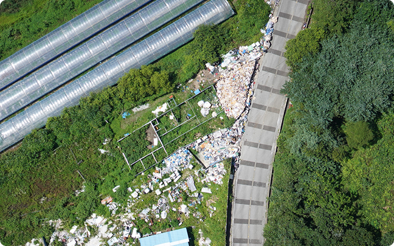
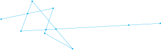

Land-XI 플랫폼
누구나 쉽게 사용할 수 있는 노코드 기반의
AI 학습·분석 플랫폼입니다.
드론·항공·위성영상과 AI 기술을
활용하여 공공서비스 혁신을 지원합니다.





Land-XI 분석 서비스
01방치쓰레기 탐지
불법으로 방치된 쓰레기를 신속하게 탐지함으로써 국토 환경을
보호하고 깨끗한 도시 조성을 위한 서비스입니다.
보호하고 깨끗한 도시 조성을 위한 서비스입니다.
01
학습데이터 구축/검수
라벨링 도구를 사용하여
손쉽게 다양한 종류의 학습 데이터를
구축할 수 있습니다.
외부에서 구축·수집된 데이터도 업로드 하여
검토 · 수정 할 수 있습니다.
손쉽게 다양한 종류의 학습 데이터를
구축할 수 있습니다.
외부에서 구축·수집된 데이터도 업로드 하여
검토 · 수정 할 수 있습니다.
02
AI모델 학습/분석
워크플로우 기능을 통해 새로운 모델을 개발해보세요.
AI모델을 간편하게 학습시키고,
분석에 활용할 수 있습니다.
또한, 분석서비스를 통해 입력한 이미지에 대한
분석기능과 결과를 제공합니다.
AI모델을 간편하게 학습시키고,
분석에 활용할 수 있습니다.
또한, 분석서비스를 통해 입력한 이미지에 대한
분석기능과 결과를 제공합니다.
03
지도 시각화
신규모델개발 및 분석서비스의
분석결과를 지도 상에 시각화하여 제공합니다.
직관적으로 결과를 확인하고,
신속하고 효과적인 의사결정이 가능합니다.
분석결과를 지도 상에 시각화하여 제공합니다.
직관적으로 결과를 확인하고,
신속하고 효과적인 의사결정이 가능합니다.